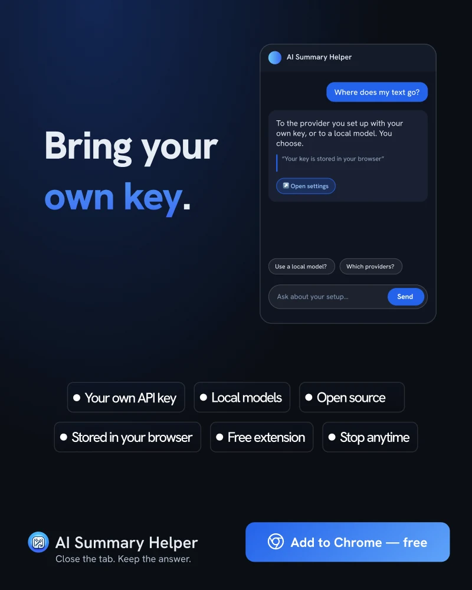

自分自身のキー。モデル。データ。
一般的なAIツールの多くは、ユーザーとモデルの間にサーバーを挟みます。仲介サーバーが存在しない場合、何が変わり、何が自己管理になるのかを解説します。
どのAI要約も仕組みは同じです。テキストを送信し、結果を受け取ります。そのツールをどれだけ信頼できるかを決めるポイントは、「その間に誰が存在するか」です。多くの製品では企業のサーバーを経由し、閲覧中のコンテンツがユーザーの選んでいないモデルへと送られています。
ここで言う「独自のキーの持ち込み（BYOK）」とは
信頼できるプロバイダーで作成したAPIキーを AI Summary Helper に貼り付け、モデルを選択するだけです。ページを要約する際、拡張機能のバックグラウンドワーカーがプロバイダーへ直接テキストを送信し、回答をストリーミング受信します。独自のキーを使用する場合、その経路に AI Summary Helper のサーバーが介在することはありません。
また、Ollama などを介して自身のマシン上で動作するモデルを指定することも可能です。その場合、ページのテキストがPCの外に出ることは一切ありません。

APIキーの保存場所
APIキーはブラウザのローカル拡張機能ストレージに保存され、同期ストレージには保存されません。つまり、ブラウザアカウント経由で他のデバイスにコピーされることはありません。そのためブラウザごとに一度入力する必要があります。キーは、設定したプロバイダーとの通信にのみ使用されます。
保護されるものと保護されないもの
この点については正確に理解しておく必要があります。独自のキーを持ち込むことで中間サーバーは排除されますが、モデルプロバイダー自体がなくなるわけではありません。ホスト型モデルに送信したデータには、各プロバイダーの利用規約やデータ保持ポリシーが適用されるため、事前にご確認ください。テキストを完全にPC内にとどめられるのはローカルモデルのみですが、ローカルモデルは通常、ホスト型モデルよりも軽量で動作が遅くなります。
本プロジェクトはオープンソースであるため、言葉をそのまま鵜呑みにする必要はありません。キーやリクエストを処理するコードはリポジトリで公開されており、いつでも確認できます。
構成の選び方
- 普段の情報収集・閲覧： 利用規約に納得できるプロバイダーのホスト型モデル。高速かつ高品質で、キーは自身で管理できます。
- 機密性の高い情報： ローカルモデル。処理速度や性能は劣りますが、データが端末の外に出ることは一切ありません。
- 試行・検証： 複数のプロバイダーを登録し、同じ記事で回答を比較してみてください。どのテキストにどのモデルが適しているかを素早く把握できます。
重要なのは、ひとつの構成だけが正しいということではありません。常に自分自身で選択できるということです。
AI Summary Helper は無料のChrome拡張機能です。
Chromeに追加